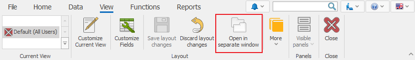

Open in separate window
With the Open in separate window function, you can work on multiple screens at the same time. This feature could be useful for dispatchers, planners, shift supervisors, team leaders, and employees preparing reports. You can open a new window along with the main one or move it to a new monitor.
You can temporarily open a form in a new window, or save it in View. To use the feature, go to the Command Ribbon >> View >> Open in separate window.

Other ways to open in a separate window are by either right clicking on the Field tab and choosing Floating Window, or by dragging it out of the Main window.

If you need that Form to continue opening in a separate window after closing the program, go to Customize Current View mode and click on Save layout changes.
When you open a Navigator in a separate window, each record will be open in a new window.